Vanderbilt · Learning Series · ATD facilitator guide · print edition
Leading the Shift, the facilitator guide

Run of show
| Screen | Full (min) | Core (min) |
|---|---|---|
| Welcome / QR | 2 | 1 |
| Objectives | 1 | 1 |
| The Chancellor's charge | 3 | <1 |
| Agenda | 1 | — |
| 01 · Model it, visibly | 8 | 6 |
| Manifesto | 1 | — |
| 02 · The three guardrails | 8 | 6 |
| 03 · The AI-enabled work audit | 8 | 6 |
| Recap quiz | 3 | 3 |
| Capstone · My adoption plan | 5 | 5 |
| Glossary | 1 | — |
| Closing · commitment | 2 | 2 |
| Total | 43 | 30 |
Audience
Part of the CHART Program and the Manager Voyage. Managers and team leads who want their teams actually using AI well, safely and openly. 8 to 24 works best; drills run in pairs. Works as the connective course after Start Smarter and alongside Workflow & Process Redesign.
Room setup
Projector plus presenter device; learners on their own devices via the Welcome-slide QR; seating that pairs easily. Virtual: breakouts of 2. The norm, stated in minute one: teams and roles, never names, and nothing typed leaves the screen. Bring your own real AI-use story; this session's credibility runs on the facilitator modeling the modeling.
Materials
- Projector or large display and the facilitator link open (this edition)
- Facilitator laptop with arrow keys or clicker; all notifications off
- Learner devices (BYOD) joining via the welcome-slide QR
- A few printed cheat sheets (cheatsheet.html) for anyone without a device
- Printed audit + plan worksheets (worksheet.html) as the no-device fallback
- Your own narrated AI-use story, rehearsed: use, check, miss
A week before
- Run both editions start to finish, doing every exercise, including the work audit on a team you actually lead. Your own honest score is your best facilitation asset.
- Prepare your narrated use story: what you used AI for this week, what the check caught, what you'd do differently. You will open section 01 with it.
- Send the pre-work invite (template on this page): come knowing your team's three most repeated outputs.
- Skim the current Gallup workplace AI findings so the modeling claim is fresh in your mouth.
The day before
- Test the projector with the facilitator link; confirm the notes rail is readable.
- Scan the welcome QR with your own phone; it must land on the learner edition.
- Run one trainer round and one full audit pass so you can drive them without looking.
- Print 5 to 10 cheat sheets and worksheets.
30 minutes before
- Welcome slide up as people arrive.
- Close every other tab; silence the machine.
- Write 'TEAMS AND ROLES, NEVER NAMES' where the room can see it.
- Say your narrated use story out loud once more.
When things go sideways
If Projector or the site fails mid-session: Whiteboard the course: the two predictors, the three rails, and the five audit questions all draw in seconds. The audit runs on paper (the worksheet mirrors it); trainers become read-aloud room votes.
If Learner devices can't join: Run facilitator-only: trainers on the projector with A/B/C hand votes; the audit and capstone move to the printed worksheet.
If A manager challenges the premise: 'my job is results, not AI evangelism': Agree, then reframe with the data: modeling IS a results lever; teams with manager support show large engagement and usage gaps over teams without it. Fifteen minutes a month of visible use is the cheapest results lever on the list.
If Someone's honest audit score is very low and they deflate publicly: Normalize immediately: 'Most rooms start in shadow adoption; that's what the research says too, and every move on your list is a fifteen-minute move.' Low scores with honest answers beat high scores with flattering ones; say so.
If The room wants to debate which AI tool is best: Park it: this course is deliberately tool-agnostic, and the audit works whatever VU approves. Tool questions route to the CHART resources; behavior questions stay in the room.
Tough questions, ready answers
Q: Isn't 'modeling AI use' just performative? My team can smell theater.
Theater is exactly what the misses-included rule prevents. Performative modeling shows polished wins; real modeling shows the check that caught the error and the prompt that failed. Teams can smell the difference, and the honest version is the one Gallup's data connects to adoption. If it feels like theater, drop the polish, not the visibility.
Q: What if I model it and the team still doesn't adopt?
Then the audit tells you which other dimension is blocking: usually unwritten guardrails (people fear stepping on a data landmine) or zero workflow integration (no designed place to use it). Modeling opens the door; the rails and one designed workflow are what people walk through. Run the audit with the team and let them tell you which it is.
Q: Only 18 percent of leaders do this well. What actually separates them?
Accenture's answer is three behaviors: curiosity (openly interested, asking what people tried), courage (using it before certainty arrives, misses visible), and connection (adoption as a trust-based team practice, never a compliance program). Notice none of the three is technical: they're leadership behaviors you already know, aimed at a new subject.
Q: Should AI use affect performance reviews?
As development, yes: the 1:1 question ('what have you tried, what did you learn?') and skill-building goals belong in coaching conversations, and the audit's fifth dimension measures exactly that. As surveillance or quotas, no: counting prompts breeds theater, and judging people for honest misses kills the safety that adoption runs on. Develop the skill; don't police the meter.
Copy-paste templates
Pre-work invite (paste into the calendar invite)
Subject: Before our Leading the Shift session. One thing to know walking in: your team's three most repeated outputs, the reports, updates, summaries, or reviews that happen every week or month. You'll use them in an audit you keep entirely to yourself. That's it, no reading, no tools to install.
7-day pulse (send one week after)
Subject: One week later, did the visible move happen? Three quick lines, reply whenever: 1) Did the first visible move from your plan run, and how did the team react? 2) Which guardrail conversation started? 3) What's your audit's lowest dimension now? Replies come to me only.
30-day re-poll (send a month after)
Subject: Thirty days of visible leadership. Two questions: 1) Rerun the five-question work audit; which dimension moved? 2) Fist to five, how confident are you leading your team's AI adoption now? Reply with the dimension and a number. Rising audit scores are the metric that matters.
After the session
Seven days out, send the pulse: 'Did the first visible move happen? What did the team's reaction tell you? What's your audit's lowest dimension now?' At 30 days: 'Rerun the audit; which dimension moved?' The count of first visible moves actually made is the program's headline Level 3 metric.
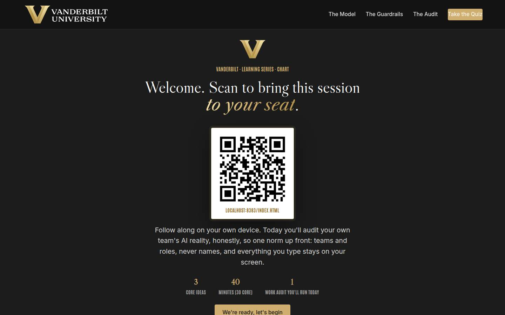
Welcome / QR Full 2 min · Core 1
Get learners in on their own devices and set the norm for honest self-assessment.
Say
“Welcome. Scan the code before we start. Today is about the single highest-leverage thing a leader does for AI adoption, and it isn't buying tools or writing policy. It's what your team watches you do. You'll audit your own team honestly today, so the ground rule: teams and roles, never names, and everything you type stays on your screen.”
Do
- Slide projected as people arrive; phones up before you speak.
- State the norm once: teams and roles, never names, and the audit stays on their screens.
Validate: Most of the room has the deck open; the norm gets a nod.
Watch for: Anyone expecting a tools demo. The frame: this is a leadership session; the tools are wherever VU put them.
Transition: “Here's the contract.”
Core path: Core: one scan prompt, the norm stated once, move on.
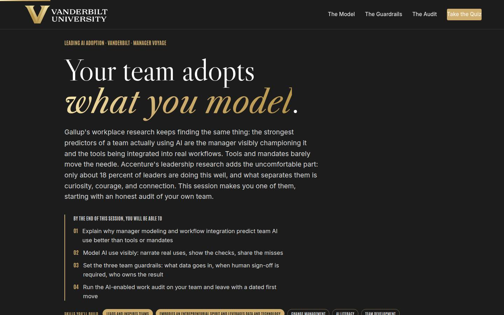
Objectives Full 1 min · Core 1
Set the contract: four capabilities, ending in an audit run and a dated visible move.
Say
“Four things by the end: you'll know why modeling and workflow integration beat tools and mandates. You'll know what visible modeling actually looks like, down to the three sentences. You'll be able to write the three guardrails that make trying safe. And you'll run the AI-enabled work audit on your own team and leave with a dated first move.”
Do
- Read the four objectives briskly.
- Name the two research anchors once: Gallup on modeling and integration; Accenture's 18 percent and the three C's.
Validate: Learners can say what the capstone is (a dated first visible move).
Watch for: Skeptics of survey research; the numbers are directional and the behaviors are cheap, say so.
Transition: “One minute on where this sits in the university's plan, then the three ideas.”
Core path: Core: objectives 2 and 4 out loud.
The Chancellor's charge Full 3 min · Core <1
Anchor manager modeling in the Chancellor's vision so adoption reads as institutional work, not a tool rollout.
Say
“Before the audit, one minute on why this is bigger than your team. The Chancellor's vision has no hedge in it: Vanderbilt will define the great university of the 21st Century and be it, operating at uncommon speed, agility, and scale. No institution reaches uncommon speed by memo; it gets there one adopted workflow at a time, led by managers the team can watch. Crescere aude, dare to grow: your team will dare exactly as much as they see you dare first.”
Do
- Read the vision sentence off the slide and let it land.
- Walk the three focus areas, one team translation each.
- Point at the flywheel: execution with ambition is adoption, and the manager is the lever.
Validate: Nods at the team-translation lines; no discussion needed here.
Watch for: The urge to teach strategy; this page is a frame, and the three ideas are waiting.
Transition: “Now the three ideas, in order.”
Core path: Core: under a minute; read the vision sentence, gesture at the three focus areas, and move on.
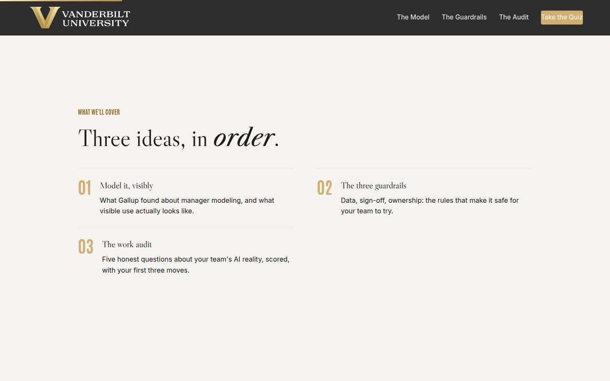
Agenda Full 1 min · Core skip
Orient: model, rails, audit.
Say
“The arc: first what the research says about modeling, and what visible use actually sounds like. Then the three guardrails that make it safe for your team to try. Then the audit: five honest questions about your team, scored, with your first three moves.”
Do
- Walk the three items in one breath each.
Validate: None needed.
Watch for: Don't teach here.
Transition: “Start with the finding that gives this course its name.”
Core path: Core: skip; the deck carries it.
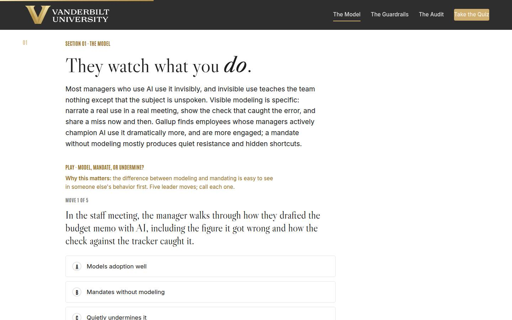
01 · Model it, visibly Full 8 min · Core 6
Install the modeling finding (Gallup) and the three C's (Accenture), and teach the narrated-use move.
Say
“Let me start by doing the thing this course teaches. This week I used AI to draft [your real example]; the check I ran caught [the real catch]; next time I'd [the real lesson]. That took thirty seconds, and it's the single strongest adoption lever the research knows. Gallup keeps finding the same two predictors of a team actually using AI: the manager visibly championing it, and the tools living inside real workflows. Mandates without modeling produce compliance theater. Silence produces shadow use. And Accenture's study of the leaders doing this well, about 18 percent, names what separates them: curiosity, courage, connection. All behaviors. All visible. All free.”
Do
- Open with YOUR narrated use: what you used AI for, what the check caught, what you'd do differently. Model the modeling.
- Land the Gallup finding: manager championing and workflow integration are the top predictors; mandates without modeling produce hidden shortcuts.
- Run Model, Mandate, or Undermine: five moves, call each.
- Walk the three C's card: curiosity, courage, connection, all visible behaviors.
- Run the pair narration drill: one real use, with the check, partner listening for the three parts.
Ask
“When did your team last SEE you use AI, not hear that you do, but watch the use and the check?”
Expect:
- Long pauses; 'never' from confident AI users
- A few genuine this-week answers
- Someone protests that their use is too mundane to show
Respond: For the 'too mundane': 'Mundane is the point. A narrated ordinary use teaches more than a demo of something impressive, because your team can copy mundane tomorrow.'
Debrief: Visible, honest, specific: the use, the check, the miss. Three sentences at a team meeting beat any policy you'll ever forward.
Validate: 4+ of 5 on the trainer; every learner has narrated one real use aloud to a partner.
Watch for: The invisible-user who claims nothing to narrate. Their week has one: the email they drafted, the summary they asked for. Help them find it; everyone has material.
Transition: “One sentence to hold, then the rules that make trying safe.”
Core path: Core: your narrated use plus the finding, trainer as room votes, pair drill becomes writing the three sentences solo.
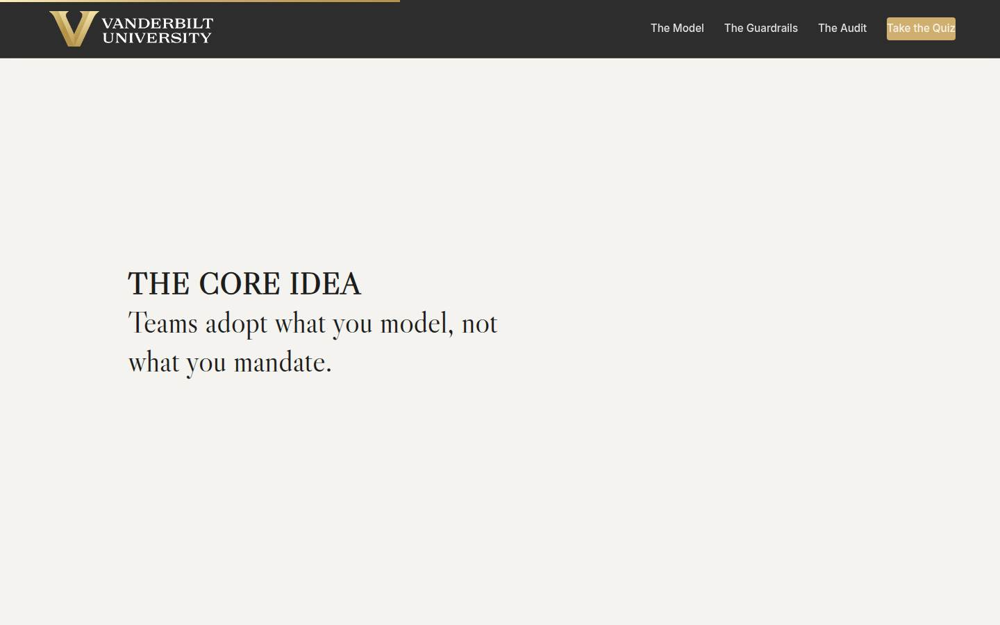
Manifesto Full 1 min · Core skip
One beat of stillness on the core idea.
Say
“Teams adopt what you model, not what you mandate.”
Do
- Let the line animate; read it once, then advance.
Validate: None; pacing.
Watch for: The urge to talk over it.
Transition: “Modeling opens the door. The guardrails are what your team walks through.”
Core path: Core: skip; say the line as you pass it.
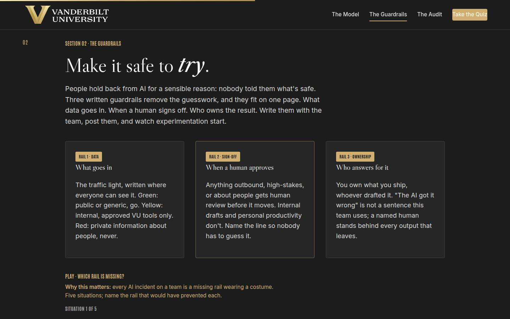
02 · The three guardrails Full 8 min · Core 6
Install the three-rail structure (data, sign-off, ownership) and drill incident diagnosis by missing rail.
Say
“People hold back from AI for a sensible reason: nobody told them what's safe, and they'd rather do nothing than step on a landmine. Three written rules remove the guesswork, and they fit on one page. The data rail is the traffic light you already know: green go, yellow approved tools only, red never. The sign-off rail names when a human reviews before something moves: outbound, high-stakes, or about people. And the ownership rail is one sentence: you own what you ship, whoever drafted it. Write them with the team, give the existing shortcuts amnesty into redesign, post the page, and put a revision date on it.”
Do
- Walk the three rail cards: data (the traffic light), sign-off (outbound, high-stakes, or about people gets eyes), ownership (you own what you ship).
- Run Which Rail Is Missing: five situations, name the rail.
- Land the two additions from Go deeper: the amnesty for existing shortcuts, and the quarterly revision date.
- Run the pair drill: draft the team's sign-off line and stress-test it.
Ask
“Which rail is weakest on your team right now, and what's the incident it's currently inviting?”
Expect:
- Ownership, usually: nobody's name on AI-assisted outputs
- Data: uncertainty about which tools are approved for what
- Honest 'all three are unwritten'
Respond: For 'all three unwritten': 'That's most teams, and it's one 30-minute session from fixed. The audit in the next section will make the case for booking it.'
Debrief: Data, sign-off, ownership: one page, written together, posted, revised quarterly. Every AI incident you'll ever debrief is a missing rail wearing a costume.
Validate: 4+ of 5 on the trainer; pairs produce a sign-off line that survives one stress-test.
Watch for: Rails drafted as prohibition lists. Reframe: guardrails written with the team read as permission, and permission is what people are waiting for.
Transition: “Now the mirror: where does your team actually stand? Five questions, scored, honest.”
Core path: Core: rail cards fast, trainer stays, pair drill becomes a solo three-sentence draft.
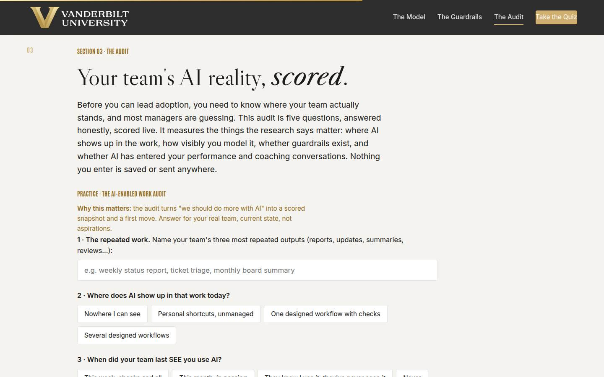
03 · The AI-enabled work audit Full 8 min · Core 6
Every learner runs the five-question audit on their real team and leaves with a scored snapshot and three prioritized moves. The session's signature block.
Say
“Now the mirror. Five questions about your real team, scored live, kept entirely on your screen. Name the three most repeated outputs your team produces, then answer honestly: where does AI show up in that work today? When did your team last see you use it? Do the three guardrails exist in writing? And does AI ever enter your performance and coaching conversations? The audit scores you out of twelve and hands you your three highest-leverage moves, ranked by your weakest dimensions. Current state, not aspirations. Low and honest beats high and flattering; you can only improve a real number.”
Do
- Frame it: current state, not aspirations; low honest scores beat high flattering ones.
- Give quiet time for all five questions; the repeated-outputs field deserves a real answer.
- Ask for tier hands: 10+, 6 to 9, 5 or under. No commentary, just the count; normalize the low tier immediately.
- Run the pair debrief: lowest dimension, and the one-level move.
- Land the cadence: quarterly rerun, and the braver version with the team scoring question 3 about you.
Ask
“By hands, no commentary: who scored ten or more? Six to nine? Five or under?”
Expect:
- The bulk of the room in the middle and low tiers
- One or two adoption leaders
- Visible relief when the low tier is the biggest
Respond: Normalize instantly: 'That distribution matches the research; most teams are in shadow adoption, and every move on your list is a fifteen-minute move, not an initiative. The leaders: your job is now drift-catching, and lending your show-your-prompts format to a peer.'
Debrief: Five dimensions, straight from the research: the work, the usage, the modeling, the rails, the conversations. Quarterly reruns make it your adoption metric, and it costs nothing to collect.
Validate: Every learner completes the audit and can name their lowest dimension and its one-level move.
Watch for: Aspirational scoring. The tell is a high score with a vague repeated-outputs field; nudge: 'answer for last month, not next quarter.'
Transition: “Quiz, then the plan that turns your lowest dimension into a dated move.”
Core path: Core: audit at full length (it is the section); pair debrief becomes a solo note. Never cut the audit.
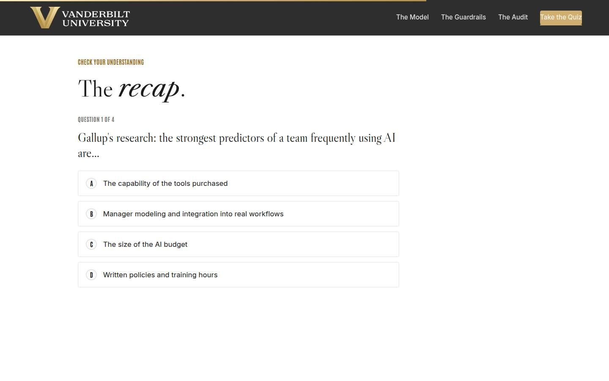
Recap quiz Full 3 min · Core 3
Score the session's knowledge against the objectives before the capstone (Kirkpatrick Level 2).
Say
“Four questions, one per big idea. The systems check before the plan.”
Do
- Everyone takes it on their own device, all four questions.
- Hands for 3-or-better; 30-second reteach on anything missed.
Validate: Room mode at 3/4 or better.
Watch for: Racing; it's the check before the plan.
Transition: “Now the move your team will actually see.”
Core path: Core: keep at full length.
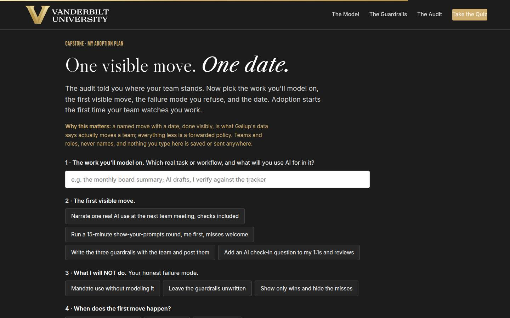
Capstone · My adoption plan Full 5 min · Core 5
Convert the audit into one dated, visible first move. The transfer artifact and Level 3 seed.
Say
“The audit told you where your team stands; the plan picks the move they'll see. Name the real work you'll model on. Choose the first visible move: the narrated use, the show-your-prompts round, the guardrails session, or the 1:1 question. Then the honest field: what you will NOT do, because you know your failure mode. And the date, because 'soon' is where adoption plans go to die. Your metric is the audit itself, rerun in a month: which dimension moved?”
Do
- Frame it: one visible move, one date, aimed at your lowest audit dimension.
- Repeat the privacy norm before anyone types.
- Give quiet time; circulate: the audit output literally lists the moves.
- Point at the NOT field as the honest one; every manager has one of the three.
Ask
“What's most likely to make you skip the first move, and what's your plan for that?”
Expect:
- Feels awkward or self-promoting
- The meeting agenda is always full
- Fear of being asked something they can't answer
Respond: Awkward: 'Three sentences about a mundane use, misses included, reads as honesty, never as promotion.' Full agenda: 'It's ninety seconds; trade one status update for it once.' Hard questions: 'Curiosity is the C that covers you: what did you try? beats knowing every answer.'
Debrief: One visible move, dated, aimed at your weakest dimension, measured by the next audit. That's leading adoption, the whole job, in one card.
Validate: Every learner builds a plan (all four fields).
Watch for: Moves chosen for comfort over leverage (picking the 1:1 question when the modeling dimension scored zero). Nudge toward the lowest dimension.
Transition: “Reference shelf, then the send-off.”
Core path: Core: protect at full length; never cut the capstone.
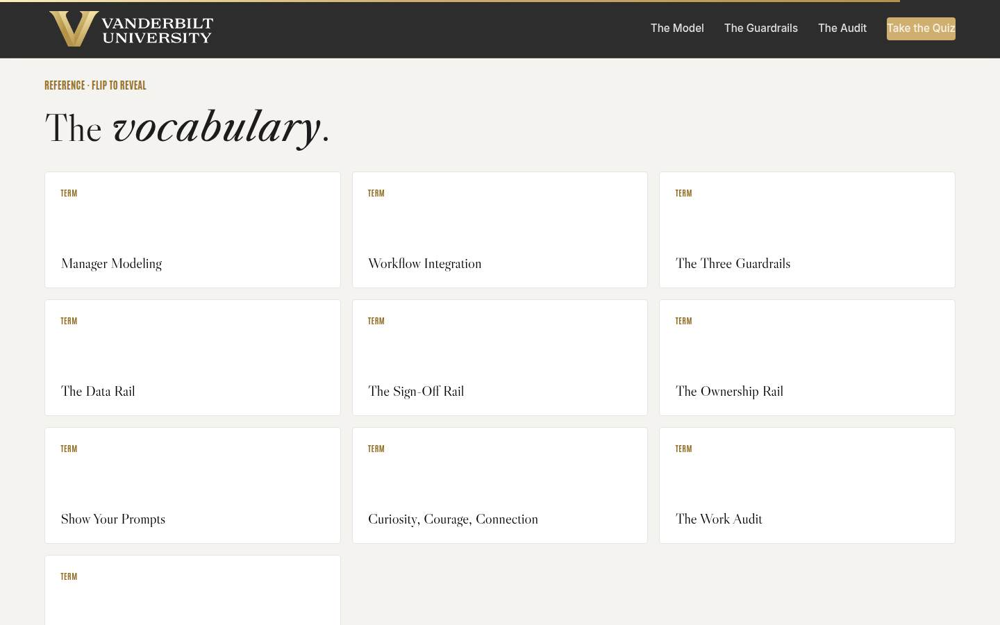
Glossary Full 1 min · Core skip
Signpost the reference layer.
Say
“Every term from today lives here, including the amnesty, which is the difference between finding your team's shortcuts and driving them underground.”
Do
- Flip one card (The Amnesty flips well and reteaches the rails).
- Tell them it's here whenever they need it.
Validate: None; reference.
Watch for: Don't tour the cards.
Transition: “Last slide. Monday is watching.”
Core path: Core: skip; point verbally from the close.
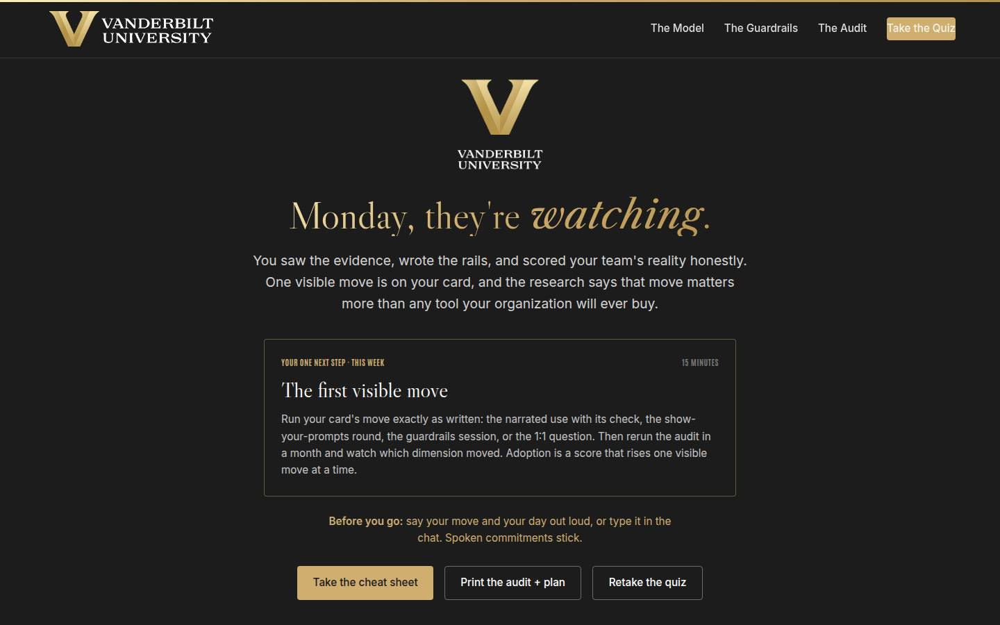
Closing · commitment Full 2 min · Core 2
Convert plans into spoken commitments and capture the Level 1 check.
Say
“The whole session in one breath: they adopt what you model, the rails make trying safe, and the audit tells you what to fix next, quarterly, forever. You have a plan. Say your move and your day out loud; spoken commitments stick.”
Do
- Read the featured next step: the first visible move, then the audit rerun in a month.
- Fist-to-five on confidence; note the number; the 30-day re-poll asks it again.
- Commitment round: move and day, out loud or in chat.
- Point at the cheat sheet and worksheet; the 7-day pulse is coming; stop on time.
Validate: Fist-to-five mostly 3+; a majority state a move and a day.
Watch for: Plans without dates; the round catches them.
Transition: “Go make the move where they can see it. Curiosity, courage, connection, and three honest sentences at Monday's meeting.”
Core path: Core: fist-to-five plus a fast round.
Generated from facilitator/notes.json. The on-screen facilitator edition lives at ./ alongside this guide.